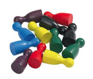

Add/Sub Fractions Assessment
Name __________________________________________________________
Date__________________________
Pizza for Dinner
5.NF.A.1
-
Shawna, Ryan and Dominic ate a whole pizza. Shawna ate ¼ of the pizza, Ryan ate ⅓ of the pizza and Dominic ate the rest. How much pizza did Dominic eat?
5.NF.B.4.a
-
Janis ate ¼ of a pizza. Her four sisters each ate an equal amount of the rest of the pizza. How much pizza did each of Janis’ sisters eat?
4.NF.B.3.d
- Harriet, Marvin and Gail played a game. At the end of the game, Harriet had ½ of the tokens. Marvin had ¾ of the rest of the tokens. Gail had 3 tokens. How many tokens did they have altogether?
- Bernice split her Halloween candy into 4 equal piles, She kept two of the piles and gave her dad one pile and her sister the rest. How much of the candy did each person get?
- Shawna, Ryan and Dominic ate a whole pizza. Shawna ate 1/6 of the pizza, Ryan ate ½ of the pizza and Dominic ate the rest. How much pizza did Dominic eat?
5.NF.B.7.a
- Bill and Jill shared ½ of a candy bar and gave the rest to Lois. Lois shared her ½ with her two younger brothers. How much of the candy bar did each person get?
3.NF.A.3.b.c.d
- Use the numerals in the box to complete the following tasks. You
may use the numerals up to two times for each task. Create two
fractions for each task. You do not need
to calculate the sums or differences in the first four
tasks.

- Create the greatest sum.
- Create the smallest sum.
- Create the greatest difference.
- Create the smallest positive difference.
- Explain how you determined the fractions for the first 4 problems.
- Create two equivalent fractions.
- Create two fractions equivalent to ½.
- Create two fractions equivalent to two different whole numbers.
- Create two fractions with the same numerator and write an inequality to show the comparison.
- Create two fractions with the same denominator and write an inequality to show the comparison.
4.NF.B.3.a
- Use the numerals in the box to complete the following tasks. You
may use the numerals up to two times for each task. Create two
fractions for each task.
- Create the greatest sum.
- Create the smallest sum.
- Create the greatest difference.
- Create the smallest positive difference.
- Explain how you determined the fractions for the first 4 problems.